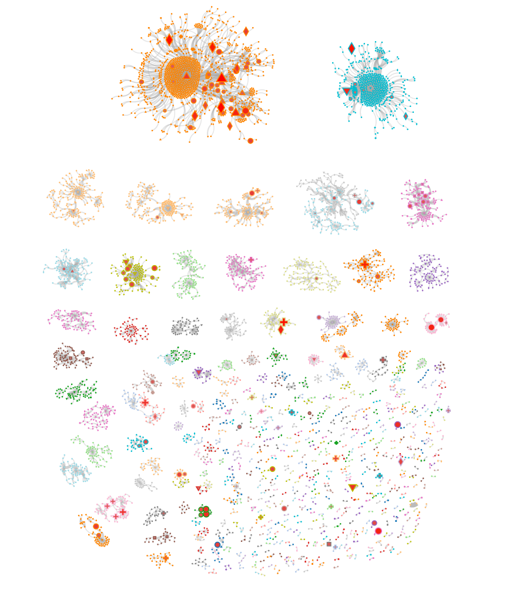
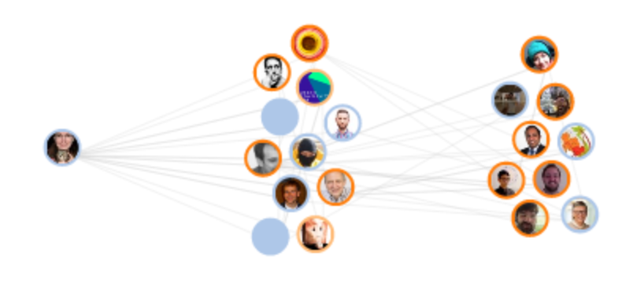
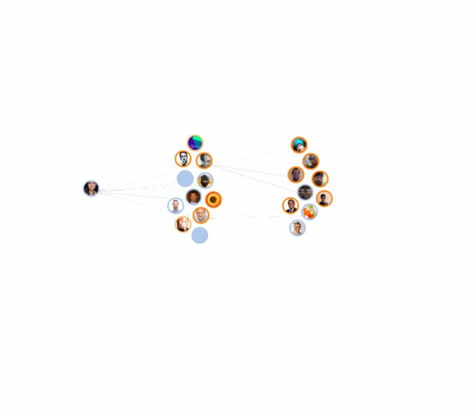

Untangling the Hairball
John Alexis Guerra Gómez
@duto_guerra
It's Colombia not Columbia
I had a network
Well, actually
I had a question
OpenVis 2014, 2015
- Couldn't come
- so I followed online
Realizations:
- I need to go!
- Twitter is OpenVis backchannel
- Am I getting it all?
Who should I be following to get the best out of OpenVis' Twitter discussions?
Well, you could follow all the people that mentions #OpenvisConf
- 3000+ Tweets
- 784 Accounts
What about the interesting people that didn't talk #OpenvisConf during the conference?
mbostock
He didn't tweet during OpenVis 2016

What? were you busy doing d3v4? d3.express?
mbostock
¡Gracias viejo!

I should be following him
What about only the people followed the most by the people that talk #OpenVisConf?
Let's find the accounts that you (#openVisConf community) follows the most

Let's visualize it!
- D3!
- Networks!
State of the art netviz

Filter 300!

Only influentials!

Communities
Back to my question!
Let's fix axis
Number of followers overall vs followers in #OpenVisConf
Links on demand
Add back more nodes
Number of tweets
How to untangle the hairball?
Tasks!
What are your tasks?
What are your users?
Visualization Analysis and Design

 http://www.cs.ubc.ca/~tmm/talks.html#vad16act
http://www.cs.ubc.ca/~tmm/talks.html#vad16actNetViz tasks

Overview

Query
Overview
IEEEVIS Citation Network
All authors citations 2015
Tip1. Filter
Display only the most important nodes for your task (a core)
Tip2 Select neighborhood
That core can be unconnected, so select also their neighborhood
Tip3 Communities
Use community detection
Netclustering.js
netClustering.cluster(nodes, links)
Force in a box
simulation = d3.forceSimulation(nodes)
.force("group", forceInABox()
.nodes(nodes)
.links(links)
.size(width,height)
.force("link", d3.forceLink().links(links)
.strength(forceInABox.linkStrength))
Distributes clusters on a treemap
https://github.com/john-guerra/forceInABoxForce in a box
Distributes clusters using forces
https://github.com/john-guerra/forceInABoxTip4 Navigate into clusters
Tip5 Use different layouts
Query
- Tip6 Ego centric views
- Tip7 Expand on demand
- Tip8 Node pining

Other network visualizations
http://networkcube.net| Jean-Daniel Fekete | Benjamin Bach | Nathalie Henry Riche | Paola Llerena Valdivia | Emmanouil Giannisakis |
Thank you!
- Define your tasks
- Filter
- Overview or Query?
- Beyond node-link
Postdoc
Come and work with us on cutting edge photo visual analytics
More info here